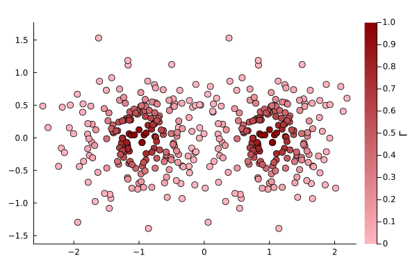

Getting Started
This getting started guide will introduce the main components of PotentialFlow.jl. The code examples here should be directly copy-paste-able into the Julia REPL (even with the julia> prompt and sample results).
Creating Flow Elements
We start by importing the library and creating a single point vortex with unit circulation located at (1,1):
julia> using PotentialFlow
julia> p = Vortex.Point( 1.0 + 1.0im, 1.0 )
Vortex.Point(1.0 + 1.0im, 1.0)By convention, the arguments for element constructors are position(s), circulation/strength(s), followed by any type specific parameters. For example, a vortex blob at the same location as p with a blob radius of 0.1 is created with
julia> Vortex.Blob(1.0 + 1.0im, 1.0, 0.1)
Vortex.Blob(1.0 + 1.0im, 1.0, 0.1)We can use Julia's vectorized dot syntax to construct whole arrays of elements. For example, here we create five point vortices and five point sources:
julia> N = 5;
julia> zs = Complex.(randn(N), randn(N));
julia> vortices = Vortex.Point.(zs .+ 1.5, rand(N))
5-element Vector{PotentialFlow.Points.Point{Float64, Float64, Val{Inf}}}:
Vortex.Point(1.429416861046102 + 0.2675644186288851im, 0.5710874493423871)
Vortex.Point(2.0314767537831964 + 1.7499336925282452im, 0.4528085872833483)
Vortex.Point(0.693147673993286 - 0.8260207919192974im, 0.30232547191787174)
Vortex.Point(3.956991333983293 - 1.0427524178910967im, 0.0013502779247226426)
Vortex.Point(2.6648740735275194 - 0.3291338458564041im, 0.5670236732404312)
julia> sources = Source.Point.(zs .- 1.5, rand(N))
5-element Vector{PotentialFlow.Points.Point{ComplexF64, Float64, Val{Inf}}}:
Source.Point(-1.570583138953898 + 0.2675644186288851im, 0.6159379234562881)
Source.Point(-0.9685232462168037 + 1.7499336925282452im, 0.19573857852575793)
Source.Point(-2.306852326006714 - 0.8260207919192974im, 0.012461945950411835)
Source.Point(0.956991333983293 - 1.0427524178910967im, 0.3119923865097316)
Source.Point(-0.3351259264724804 - 0.3291338458564041im, 0.11479916823306191)
We can mix different vortex types together by grouping them in tuples. For example, a collection of vortex elements consisting of the point vortices and vortex blobs created earlier can be grouped together with:
julia> sys = (vortices, sources);The Unicode characters used in the examples can be entered in the Julia REPL (and most text editors with the appropriate plugins) via tab completion.. For example:
- Γ:
\Gamma<TAB> - Δ:
\Delta<TAB> - xÃá:
x\dot<TAB> - üåÄ:
\:cyclone:<TAB>
We can access properties of any vortex element by directly accessing its fields, for example:
julia> p.z
1.0 + 1.0im
However, it is better practice to use accessor methods, such as:
julia> Elements.position(p)
1.0 + 1.0im
since not all element types store their position in a z field but they are all required to implement a Elements.position method (also see Elements.impulse and Elements.position). These accessor methods, combined with the dot syntax, also make it easier to work with properties of arrays and tuples of vortex elements.
julia> Elements.circulation(vortices)
1.894595459708761
julia> Elements.circulation(sources)
0.0
julia> Elements.circulation(sys)
1.894595459708761
julia> Elements.circulation.(vortices)
5-element Vector{Float64}:
0.5710874493423871
0.4528085872833483
0.30232547191787174
0.0013502779247226426
0.5670236732404312
julia> Elements.position.(sources)
5-element Vector{ComplexF64}:
-1.570583138953898 + 0.2675644186288851im
-0.9685232462168037 + 1.7499336925282452im
-2.306852326006714 - 0.8260207919192974im
0.956991333983293 - 1.0427524178910967im
-0.3351259264724804 - 0.3291338458564041im
Computing Velocities
Now that we can create potential flow elements, we want to add in some dynamics. The key functions for this are the induce_velocity and induce_velocity! pair and self_induce_velocity!.
induce_velocity(target, source, t) computes the complex velocity that a vortex element(s) source induces on a target at time t. The target can be
a complex position
julia> induce_velocity(0.0 + 0.0im , vortices, 0.0) -0.009273430685548957 - 0.14388782250895069im julia> induce_velocity(0.0 + 0.0im , sys, 0.0) 0.06371598168246967 - 0.11447266706501986ima vortex element
julia> induce_velocity(p, sys, 0.0) -0.05427421225945314 - 0.09252070426470571iman array/tuple of vortex elements
julia> induce_velocity(vortices, sources, 0.0) 5-element Vector{ComplexF64}: 0.06394802926014045 + 0.031010783429706375im 0.044311854409737575 + 0.02909416162231901im -0.056688156118723444 + 0.05984574850840092im 0.04258756546240927 - 0.0073936799851473615im 0.06039151039573569 + 0.00348881879586619imjulia> induce_velocity(sources, sys, 0.0) 5-element Vector{ComplexF64}: -0.03819846572429091 - 0.08854228453987956im -0.02825741998318055 - 0.0012332495590173659im -0.05468961297718501 - 0.1411284938189232im 0.23933127172071716 + 0.003620998811504985im 0.05240511983016098 - 0.15976070174985801im
The in-place version, induce_velocity!(velocities, targets, source, t), computes the velocity and writes the results into a pre-allocated data structure. For example:
julia> vel_vortices = zeros(ComplexF64, length(vortices))
5-element Vector{ComplexF64}:
0.0 + 0.0im
0.0 + 0.0im
0.0 + 0.0im
0.0 + 0.0im
0.0 + 0.0im
julia> induce_velocity!(vel_vortices, vortices, sources, 0.0);
julia> vel_vortices
5-element Vector{ComplexF64}:
0.06394802926014045 + 0.031010783429706375im
0.044311854409737575 + 0.02909416162231901im
-0.056688156118723444 + 0.05984574850840092im
0.04258756546240927 - 0.0073936799851473615im
0.06039151039573569 + 0.00348881879586619im
To make it easier to allocate velocities for more complex collections of vortex elements, the library provides the allocate_velocity function:
julia> vels = allocate_velocity(sys);
julia> typeof(vels)
Tuple{Vector{ComplexF64}, Vector{ComplexF64}}The code above created a tuple containing two arrays of velocities, corresponding to the structure of sys. Similarly, there is also the reset_velocity!(velocities, sources) function, which resizes the entries in velocities to match the structure of sources if necessary, then sets all velocities to zero. We can compute the velocity that a source induces on the entire points/blobs system with:
julia> src = Vortex.Point(1.0, 1.0);
If we want the velocity that the points/blobs system induces on itself, we can call
reset_velocity!(vels, sys)
induce_velocity!(vels[1], vortices, vortices)
induce_velocity!(vels[1], vortices, sources)
induce_velocity!(vels[2], sources, vortices)
induce_velocity!(vels[2], sources, sources)This becomes difficult to keep track of when sys gets larger or more complicated (e.g. nested collection of elements). Instead, we can use the self_induce_velocity! function, which takes care of applying all the pairwise interactions (recursively if need be):
julia> reset_velocity!(vels, sys);
julia> self_induce_velocity!(vels, sys, 0.0);Time Marching
Now that we compute the velocities of a system of vortex elements, we can march the system forward in time to simulate its behavior. As an example, we will simulate of two clusters of vortex blobs merging.
N = 200
zs = Complex.(0.5randn(N), 0.5randn(N))
Γs = @. exp(-4abs2(zs))
cluster₁ = Vortex.Blob.(zs .+ 1, Γs, 0.01)
cluster₂ = Vortex.Blob.(zs .- 1, Γs, 0.01)
sys = (cluster₁, cluster₂)
vels = allocate_velocity(sys)
plot(sys, color = :reds, clim = (0, 1))
Given an array or tuple of vortex elements and their velocities, we can compute their positions after some time interval with the advect!(x₊, x, ẋ, Δt) function, where
x₊is where the new states are storedxis the current stateΔtis the time intervalẋis the velocity.
In our case, we will let x‚Çä and x both be set to sys:
Δt = 0.01
for t in 0:Δt:1.0
reset_velocity!(vels, sys)
self_induce_velocity!(vels, sys, t)
advect!(sys, sys, vels, Δt)
end
plot(sys, color = :reds, clim = (0, 1))